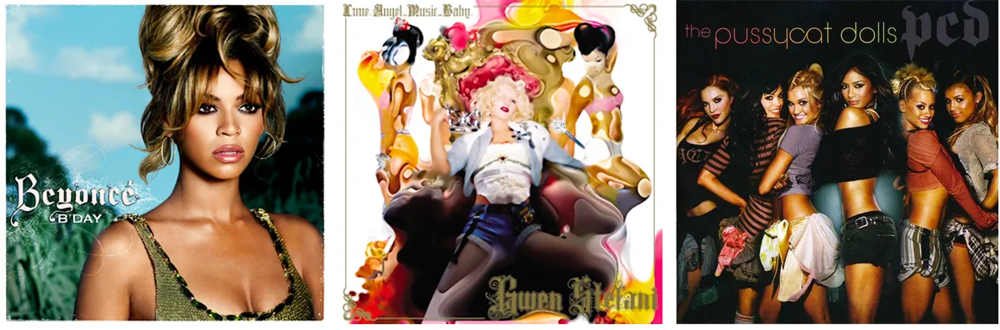

Blackletter History
Het Karolingische rijk (751 - 888) zorgde voor een culturele bloei in Europa. Karel de Grote, ondanks dat hij zelf niet bijzonder geletterd was, stimuleerde hij leren en liet een nieuw, helder schrift ontwikkelen: het Karolingische minuscule. Dit schrift had ronde vormen, puntjes op i's en werd basis voor ons schrift.
Blackletter, ook wel Gotisch schrift genoemd, begon op te komen in West-Europa tijdens de Middeleeuwen, zo rond de 12e eeuw. Het was een evolutie van de Karolingische minuskel. Naast bijbels en religieuze manuscripten werden boeken over uiteenlopende onderwerpen zoals zaken, recht, grammatica en geschiedenis geproduceerd als gevolg van de nieuw opgerichte universiteiten. Elk boek werd met de hand geschreven en moest snel worden geproduceerd. Ondanks de betere leesbaarheid van de Karolingische minuskel, kostten de grote lettervormen meer tijd om te produceren en namen ze ook een aanzienlijke hoeveelheid ruimte in beslag. Schrijfmaterialen waren destijds duur, dus er was geen twijfel dat Gotisch schrift om economische redenen werd geboren.
De Gotische stijlen die zich ontwikkelden vanuit de Karolingische minuskel in Noord-Europa tijdens de 11e en 12e eeuw worden aangeduid als textualis handschriften (ook bekend als "Textura") en worden beschouwd als de basisvorm van Blackletter die uiteindelijk evolueerde naar andere stijlen van Blackletter, zoals Rotunda, Schwabacher, Faktur.
Johannes Gutenberg introduceerde in de 14e eeuw de drukpers met losse letters (bekend als de Gutenbergpers) en handmatig gegraveerde textualis vormen om de Gutenberg bijbel te drukken. Dit was het eerste massaal geproduceerde boek gedrukt met losse letters en de weinige exemplaren die er vandaag de dag nog zijn, worden beschouwd als een van de meest waardevolle boeken ter wereld.
Tot de 15e eeuw was Blackletter een populair schrift. Na de introductie van het nieuwe lettertype Antiqua verloor Blackletter aan populariteit, behalve in Duitsland en Duitstalige landen. Toch bleven Antiqua en Blackletter tot de twintigste eeuw naast elkaar bestaan.

De populariteit van Fraktur nam pas echt in het tijdperk van de Tweede Wereldoorlog met de opkomst van het Derde Rijk. Veel van de nazipropaganda werd gedrukt met dit schrift en de stijl werd uiteindelijk (helaas) synoniem met het naziregime. Ironisch genoeg, hoewel het symbool was voor Duits nationalisme en traditie, haatte Hitler Fraktur en riep hij op om een moderner lettertype te gebruiken voor zijn fascistische regime.
Fraktur heeft onvermijdelijk een slechte naam gekregen door de associatie met het naziregime en niemand wilde het nog aanraken. Tientallen jaren na WOII zou, ongeacht de boodschap, de betekenis van het lettertype zelf alle andere informatie overschaduwen. Na deze periode bleef Blackletter op de achtergrond en beleefde pas bijna een eeuw later een echte heropleving.
Vandaag de dag zie je Blackletter kalligrafie, handlettering en moderne Blackletter typografie regelmatig. Deze zijn niet langer beperkt is tot de duistere geschiedenis. Een paar hedendaagse voorbeelden zijn album covers, posters en ook websites.


Kenmerken
Blackletter
Soorten
Blackletter schrift bestaat uit vier hoofdstijlen: Textura, Rotunda, Schwabacher en Fraktur. Varianten hierop ontstonden door een mix van deze stijlen. Door de eeuwen heen beïnvloedden factoren als regio, opleiding, beschikbare materialen, religie en politiek hoe schrift werd geschreven.